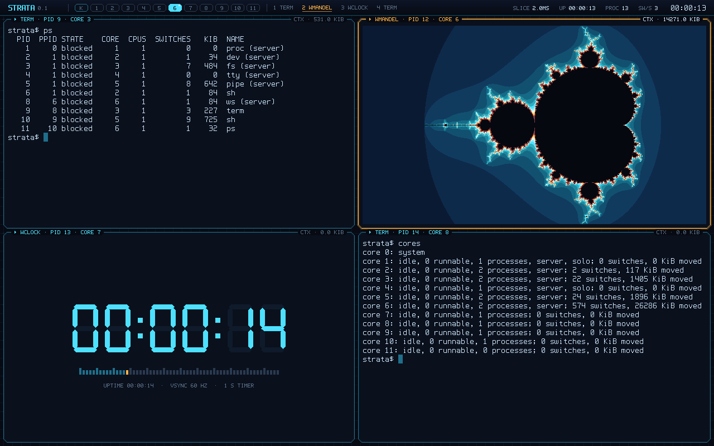

StrataOS 0.1 · the window server
THE WINDOW SERVER
ws is the only process that touches the framebuffer. Clients draw
in their own memory and lend each finished band of pixels; the server keeps every window's
surface and composes the screen through transfers.
01Bands, surfaces and the screen
Memory capabilities are linear: a surface cannot be writable by a client and readable by the server at once. So the surfaces live with the server, and a client lends a band of its own arena for as long as one DAMAGE takes.
tput. A window's surface reaches the
screen by a tget and a tput.02How it runs
- Starting.
wstyped at a shell:proccreates it as the server of the lowest empty core. It registers as "ws", takes the framebuffer fromdev(GRANT_FB: the memory and the controller's ports) and the keyboard fromtty(it becomes the foreground process and switches the console to raw), and catches interrupts, which it forwards to the focused window's process. - Tiles. Up to four windows tile the screen; the tile decides a window's size, and a client learns its surface's size from CREATE and from resize events. Alt+F makes the focused window full screen, Alt+Z the only tile.
- Events. A client waits in EVENT, which the server parks until a key, a resize, a close, a change of focus or a pointer event arrives, or the timeout passes. A client that asked at CREATE is interrupted (SIGNAL) when events wait and it is not in EVENT.
- The machine made visible. The strip at the top has one cell per core, lit in the
colour of the process running there, pulsing on every context switch; each window's tag shows
how many kilobytes its process's switches have moved. Every 250 ms the server asks
procfor the cores, processes and slice. - Ending. When
wsends, however it ends, the kernel revokes the framebuffer (every capability cut from it dies), its name goes from the registry, clients waiting on it get −1, the console returns to the shell, andwscan be run again.
Every message ws answers: the catalogue ·
source: os/ws/ws.s,
hw_os.s,
os/progs/term.s ·
Section 18.13, The window server

ws →